Chapter 17 Correlation, Causation, and LM
Things are often correlated, and such correlations are often random and may be attributed to scales of your variables and just reflect numerical variability rather than true relationship. Always have an idea in mind before setting up and claiming any relationship in your data instead of just looking at the relationships and then suggesting there is one.
To see some fun spurious correlations you can have a look here
We will illustrate this with a very silly example. We have got some data on ice cream sales and shark attacks, and have found that there was a significant and positive correlation. Lets get data in and see what has happened there.
17.2 Simple Linear Regression in R
Linear regression attempts to model the relationship between two variables by fitting a linear equation to observed data. Every value of the independent variable x is associated with a value of the dependent variable (y).
We are looking at the following set up. Where _0 represents the expected value of shark attacks when no ice cream has been sold and where _1 would suggest to us the marginal effect of every unit increase in ice cream sale from the number of shark attacks.
\[\begin{equation} Y_[i] = \beta_0 + \beta_1 * X_i + \epsilon_i \end{equation}\]
More specifically:
\[\begin{equation} Shark Attacks = \beta_0 + \beta_1 * Ice Cream Sales \end{equation}\]
#Run the model
sharks_model1 <- lm(SharkAttacks ~ IceCreamSales, data = sharks)
#Summarise the output
summary(sharks_model1)##
## Call:
## lm(formula = SharkAttacks ~ IceCreamSales, data = sharks)
##
## Residuals:
## Min 1Q Median 3Q Max
## -16.5813 -4.6829 -0.9704 4.8391 17.7726
##
## Coefficients:
## Estimate Std. Error t value Pr(>|t|)
## (Intercept) 4.35231 5.23776 0.831 0.408
## IceCreamSales 0.33627 0.05874 5.725 1.65e-07 ***
## ---
## Signif. codes: 0 '***' 0.001 '**' 0.01 '*' 0.05 '.' 0.1 ' ' 1
##
## Residual standard error: 7.173 on 82 degrees of freedom
## Multiple R-squared: 0.2855, Adjusted R-squared: 0.2768
## F-statistic: 32.77 on 1 and 82 DF, p-value: 1.648e-07Lets study the output carefully, what is your _0, _1?
What do you conclude about the overall model? What about R squared values? F statistic?
We would say that ice cream sales can ‘predict’ the number of shark attacks, and that ice cream sales account for 27.68% of the variance in shark attacks. The F-statistic is a good indicator of whether there is a relationship between our predictor and the response variables. The further the F-statistic is from 1 the ‘better it is’, and ours is relatively big (and significant) given our number of data points.
Remember that R squared represents the ratio of explained variance by the model over total variation in your data. While the F statistic is used to test the hypothesis that the model you set up is better than null/no model or that the ratio of explained variance over total will be different once we set up the model with few explanatory variables.
In general, this model isn’t that bad if you were to look at explanatory power. However, we know that it doesn’t make much sense! Let us add the temperature variable into the setting.
More specifically:
\[\begin{equation} Shark Attacks = \beta_0 + \beta_1 * Ice Cream Sales + \beta_2 * Temperature \end{equation}\]
#Adding extra variable
sharks_model2 <- lm(SharkAttacks ~ IceCreamSales + Temperature, data = sharks)
#Summarise
summary(sharks_model2)##
## Call:
## lm(formula = SharkAttacks ~ IceCreamSales + Temperature, data = sharks)
##
## Residuals:
## Min 1Q Median 3Q Max
## -15.2433 -2.6065 -0.0976 2.8733 16.6965
##
## Coefficients:
## Estimate Std. Error t value Pr(>|t|)
## (Intercept) 0.56510 4.30514 0.131 0.8959
## IceCreamSales 0.10459 0.05957 1.756 0.0829 .
## Temperature 1.29276 0.19802 6.528 5.4e-09 ***
## ---
## Signif. codes: 0 '***' 0.001 '**' 0.01 '*' 0.05 '.' 0.1 ' ' 1
##
## Residual standard error: 5.842 on 81 degrees of freedom
## Multiple R-squared: 0.5319, Adjusted R-squared: 0.5203
## F-statistic: 46.01 on 2 and 81 DF, p-value: 4.469e-14Lets make tables a bit easier to study:
#Load a nice package 'texreg'
library(texreg)screenreg(list(sharks_model1, sharks_model2))##
## ===================================
## Model 1 Model 2
## -----------------------------------
## (Intercept) 4.35 0.57
## (5.24) (4.31)
## IceCreamSales 0.34 *** 0.10
## (0.06) (0.06)
## Temperature 1.29 ***
## (0.20)
## -----------------------------------
## R^2 0.29 0.53
## Adj. R^2 0.28 0.52
## Num. obs. 84 84
## RMSE 7.17 5.84
## ===================================
## *** p < 0.001, ** p < 0.01, * p < 0.05Looking good! You can now easily compare the models, and suggest that temperature was a confounding variable. We’ll discuss model comparisons in more detail a bit later.
17.3 Regression Diagnostics - assess the validity of a model
Lets try to run a model on a different data set. We will study what ‘predicts’ anxiety levels of students taking statistics course. We have some ideas about revision completeness being one of the reasons why students may feel anxious.
Our model can be written as follows:
\[\begin{equation} Anxiety = \beta_0 + \beta_1 * Revision \end{equation}\]
Load the ‘anxiety’ data in:
anxiety <- read.csv('anxiety.csv')Our first task is to describe and visualise the variables of interest. We introduce pair panels here, which is quite a handy way to check for correlations.
#Describe
describe(anxiety)## vars n mean sd median trimmed mad min max range skew
## Code 1 103 52.00 29.88 52.00 52.00 38.55 1.00 103.00 102.00 0.00
## Revised 2 103 19.85 18.16 15.00 16.70 11.86 0.00 98.00 98.00 1.95
## Exam 3 103 56.57 25.94 60.00 57.75 29.65 2.00 100.00 98.00 -0.36
## Anxiety 4 103 74.34 17.18 79.04 77.05 10.75 0.06 97.58 97.53 -1.95
## Gender* 5 103 1.50 0.50 2.00 1.51 0.00 1.00 2.00 1.00 -0.02
## kurtosis se
## Code -1.24 2.94
## Revised 4.34 1.79
## Exam -0.91 2.56
## Anxiety 4.73 1.69
## Gender* -2.02 0.05#Visualise
pairs.panels(anxiety [, 2:4])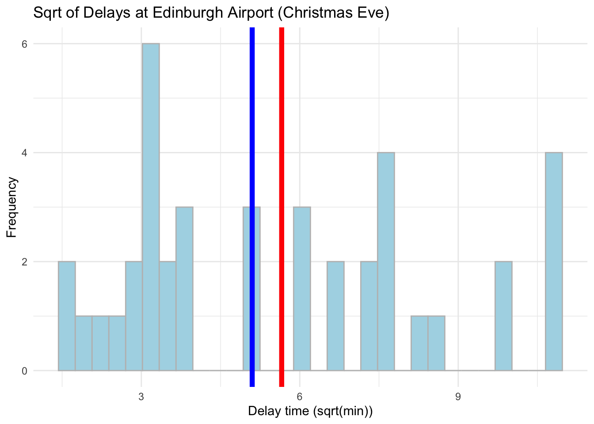
Lets fit a linear model:
#Run the model
model_anx <-lm(Anxiety ~ Revised, data = anxiety)
#Summarise
summary(model_anx)##
## Call:
## lm(formula = Anxiety ~ Revised, data = anxiety)
##
## Residuals:
## Min 1Q Median 3Q Max
## -76.325 -4.269 1.304 6.415 36.488
##
## Coefficients:
## Estimate Std. Error t value Pr(>|t|)
## (Intercept) 87.66755 1.78184 49.20 <2e-16 ***
## Revised -0.67108 0.06637 -10.11 <2e-16 ***
## ---
## Signif. codes: 0 '***' 0.001 '**' 0.01 '*' 0.05 '.' 0.1 ' ' 1
##
## Residual standard error: 12.17 on 101 degrees of freedom
## Multiple R-squared: 0.503, Adjusted R-squared: 0.4981
## F-statistic: 102.2 on 1 and 101 DF, p-value: < 2.2e-16#Get confidence intervals
confint(model_anx, level = 0.95)## 2.5 % 97.5 %
## (Intercept) 84.1328491 91.2022481
## Revised -0.8027426 -0.5394183#We are 95% confident that for a 1 point increase in revision, the average decrease in anxiety is between 0.8 and 0.5 points. Lets also plot the relationship and fitted line:
#Plot
plot(anxiety$Revised,anxiety$Anxiety,
main='Relationship between revision and anxiety',
ylab='Anxiety score',
xlab='% of all topics revised',
col='blue',
pch=9)
#Add the line
abline(model_anx, col='red', lwd=4)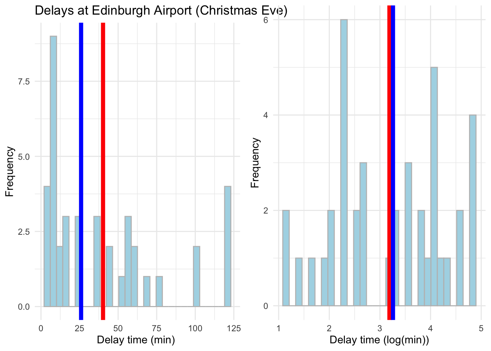
What kind of relationship does there seem to be based on this plot?
Lets check for the assumptions. From first glance do you notice anything?
Perhaps we could say that most of the students in the sample have not completed their revision with scores about 20-40 percent of total topics. We have quite a few students with very high levels of anxiety and those were associated with less than 50 percent of topics being revised.
Can we say that the effect of extra revision on anxiety would be the same for those who are on the lower scale of revision versus high? We can clearly see that the effect might decrease gradually as we tend towards revision=100.
Would we trust the results we found? Lets do some diagnostics!
Data Appropriateness
- The predicted variable (also called the outcome, the dependent variable or Y) should be continuous (measured at interval or ratio level)
- The predicted variable should be unbounded, or at least cover a wide range of values
- The predictor variable (also called the independent variable or X) should be continuous or binary (i.e., categorical with two levels, which is sometimes also called dichotomous).
Independence
Each outcome variable should be independent from the others. This would be violated if there were some pattern of time dependency for instance, or if subjects were clustered into larger units (such as members of the same family or children studying in the same classroom).
Independence can only be checked at design level, so let’s assume that each anxiety and revision score belongs to a different individual, and nobody has been counted twice or at different times.
Normality of Errors
The errors should be normally distributed (while the original data can have any kind of distribution).
We can check normality of the error by accessing the residual plots generated by the model. We can either look at them all at once but pick one:
#Specify that you want table output present you 2x2=4 tables
par(mfrow=c(2,2))
#Plot results of the model
plot(model_anx, ask = FALSE)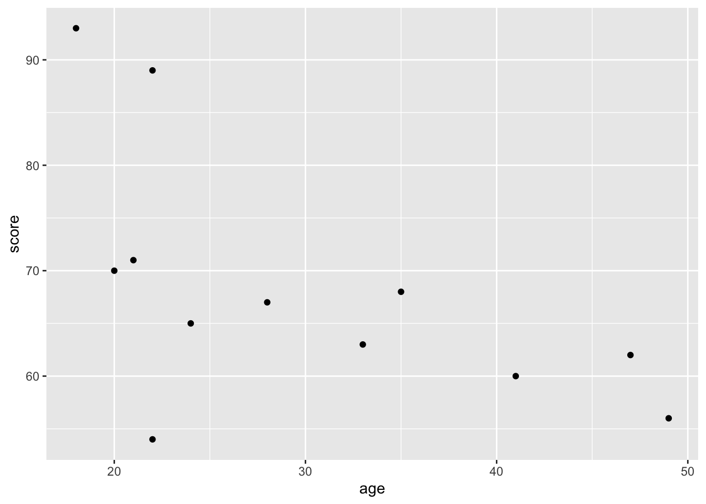
Let’s interpret the plots:
- Top left: residual vs fitted - The plot shows if residuals have non-linear patterns. This pattern is indicated by the red line, which should be approximately flat if the disturbances are homoscedastic. You want to find equally spread residuals around this line with no distinct patterns.
- Bottom left: This is the inverse of the plot on the top left, but with the y-axis standardised. The plot shows if the residuals are equally spread across the range of predictors. You are looking for equally spread points.
- Top right: qqnorm() plot evaluates the assumption of normality of residuals. If points lie exactly on the line, it is perfectly normal distribution. However, some deviation is to be expected, particularly near the ends (note the upper right), but the deviations should be small.
- Bottom right: plot of standardized residuals against the leverage. Leverage is a measure of how much each data point influences the regression. The plot also contours values of Cook’s distance, which reflects how much the fitted values would change if a point was removed. The red smoothed line should stay close to the mid-line and no point should have a large cook’s distance.
par(mfrow=c(1,1))To get to Q-Q plot for instance you then just use:
The plot compares how many points we have in each quantile (top 5%, top 10%, top 25% …) for our residuals and for an “ideal” normal distribution.
So are the two distributions of quantiles similar? In other words, is the data aligned along the diagonal? Mostly, yes. So the assumption of normality of error holds from visual inspection.
Homogeneity of the error term (homoscedasticity)
The errors of prediction (the distance between each real point and the point position predicted by your linear model) should be constant across the entire data range. This means that the errors should not be, for instance, smaller when the y value is small, and larger when the y value is large.
You can explore this one from the plots above. We will need plot 1:
plot(model_anx, which=1)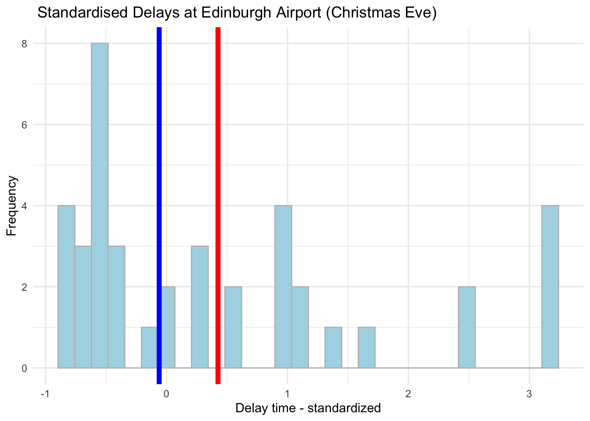
We can also perform the test to check this:
library(car)
ncvTest(model_anx)## Non-constant Variance Score Test
## Variance formula: ~ fitted.values
## Chisquare = 0.8274758, Df = 1, p = 0.363In this case our p value is greater than 0.05, we thus can conclude that the assumption of constant variance is not violated.
In short, visually, what we want to see - if I align my fitted values (predicted anxiety) along the x axis, how does the corresponding residual (error) look on the y axis? Residuals should be a mixture of everything, large and medium and small. Here, the homoscedasticity of error seems to not fit this criteria at visual inspection; the points are spread around but tend to have greater spread on the right indicating non-constant variation at different value of predicted anxiety. There is more variability at lower levels of predicted anxiety.
Quick note: there is another way you can get all diagnostics plots at once using package sjPlot.
library(sjPlot)
#Use plot_model with type='diag'
plot_model(model_anx, type='diag')## [[1]]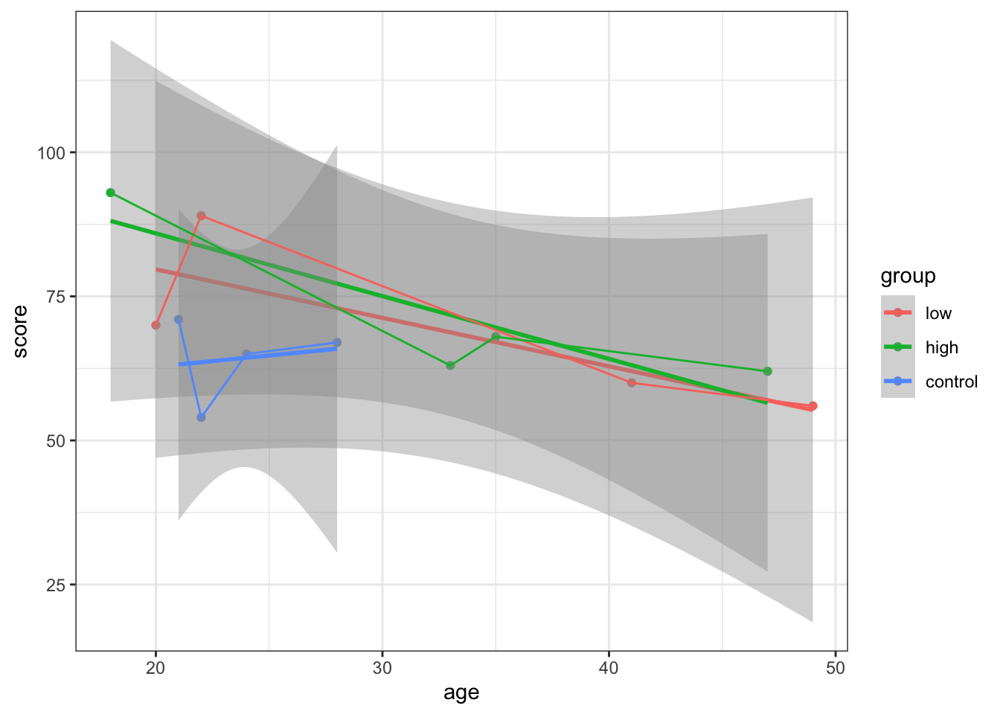
##
## [[2]]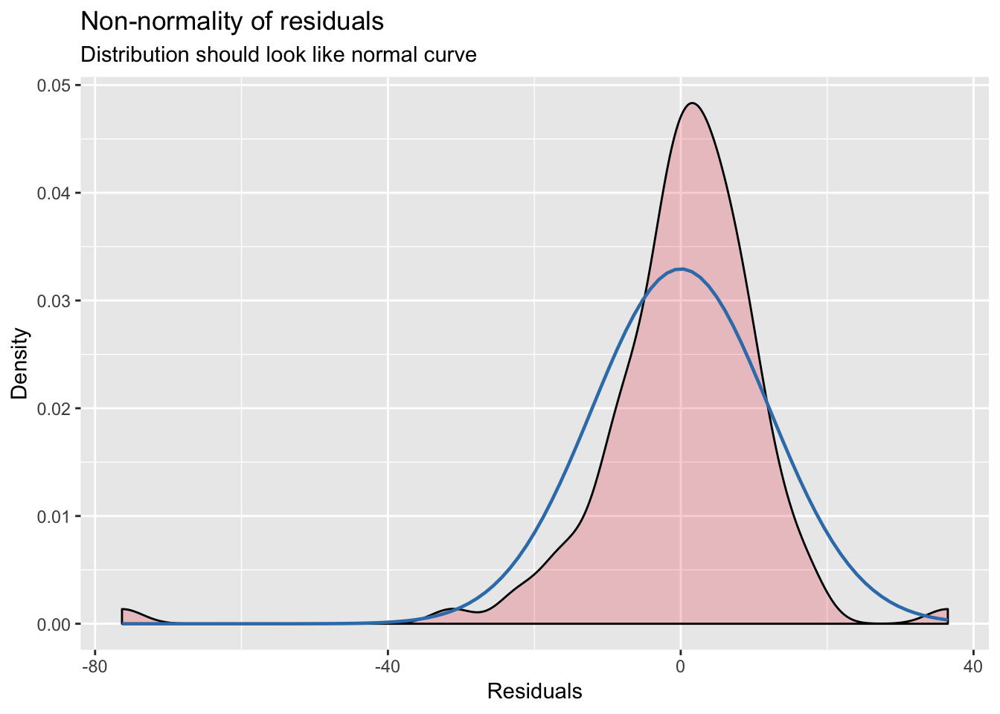
##
## [[3]]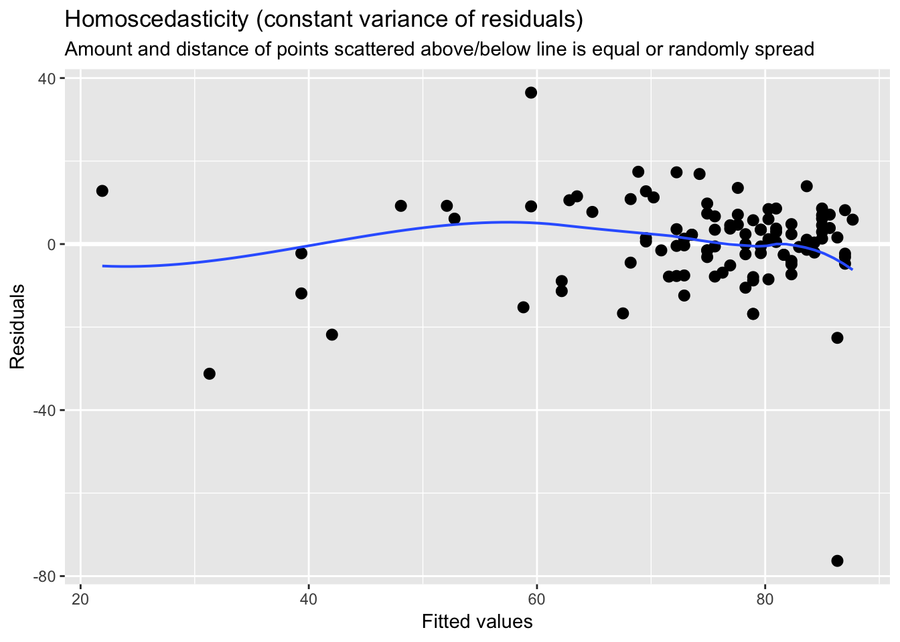
Measurement
You can check these using describe() and using histograms via hist()
describe(anxiety)## vars n mean sd median trimmed mad min max range skew
## Code 1 103 52.00 29.88 52.00 52.00 38.55 1.00 103.00 102.00 0.00
## Revised 2 103 19.85 18.16 15.00 16.70 11.86 0.00 98.00 98.00 1.95
## Exam 3 103 56.57 25.94 60.00 57.75 29.65 2.00 100.00 98.00 -0.36
## Anxiety 4 103 74.34 17.18 79.04 77.05 10.75 0.06 97.58 97.53 -1.95
## Gender* 5 103 1.50 0.50 2.00 1.51 0.00 1.00 2.00 1.00 -0.02
## kurtosis se
## Code -1.24 2.94
## Revised 4.34 1.79
## Exam -0.91 2.56
## Anxiety 4.73 1.69
## Gender* -2.02 0.05hist(anxiety$Revised)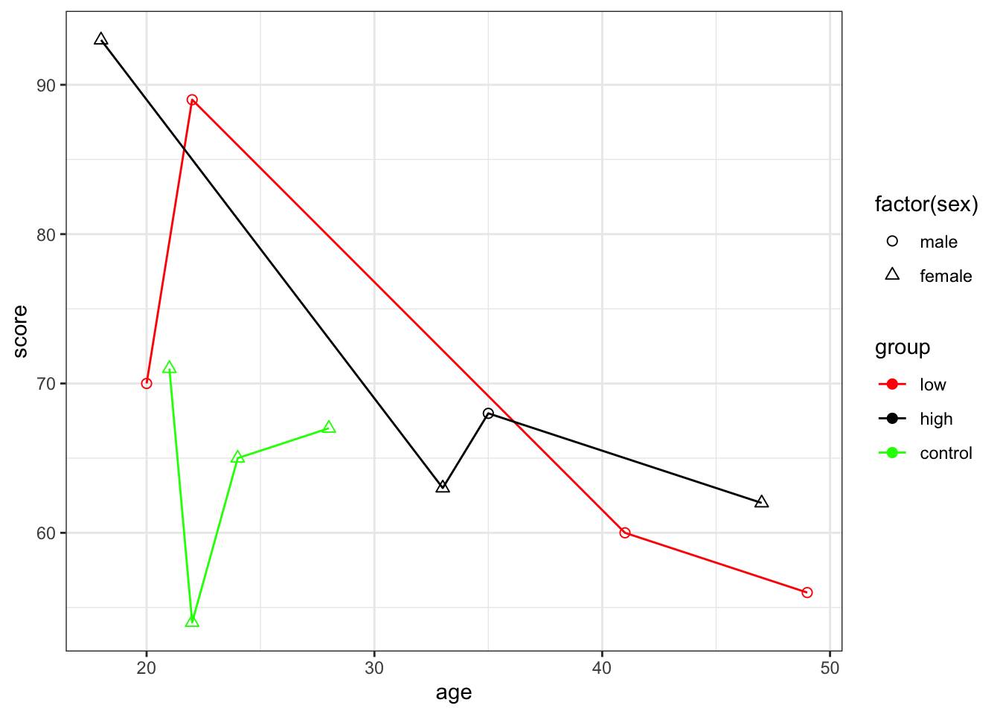
hist(anxiety$Anxiety)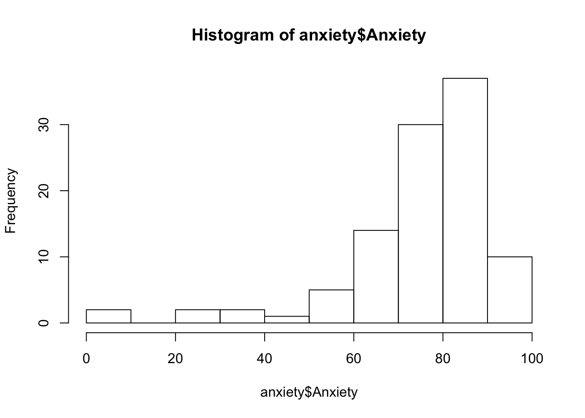
A very useful key to study Residuals vs Leverage plot is presented below:
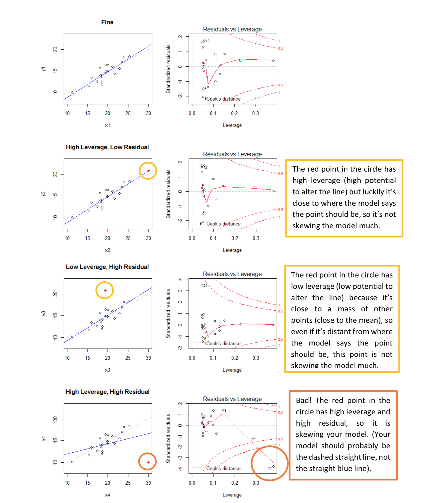
Linearity
The relation between X and Y should be linear, that is, the data points should align on an approximately straight line. (Note: If the shape is different from a straight line, you might try to transform one or both variables, for example, using a log transformation).
These can be examined visually:
# Check for linearity of relation between DV and IV using scatterplot of IV vs DV
plot(anxiety$Anxiety,anxiety$Revised,
main='Relationship between revision and anxiety',
ylab='Anxiety score',
xlab='% of all topics revised',
col='blue',
pch=9)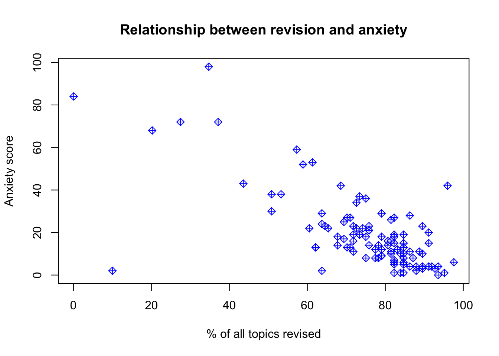
# Pearson residuals plot
residualPlots(model_anx)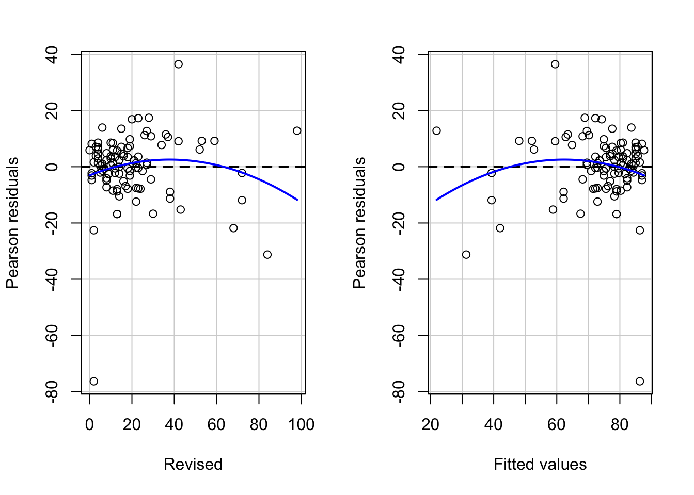
## Test stat Pr(>|Test stat|)
## Revised -1.7293 0.08684 .
## Tukey test -1.7293 0.08375 .
## ---
## Signif. codes: 0 '***' 0.001 '**' 0.01 '*' 0.05 '.' 0.1 ' ' 1# the model, represented by the line, isn't looking too great. The predictions would be a little off, meaning that the model doesn't represent the relationship between anxiety and revision that well.17.3.1 Violations of the assumptions: available treatments
One of the most common assumptions that is hard not to violate is homescedasticity. Heteroskedasticity doesn’t distort coefficient estimates, but it does throw off the estimates of the standard errors of the coefficients and the standard error of the regression, as well as the standard errors of predictions. We can use simple standard error corrections in R.
The package lmtest used for robust standard error estimation is presented below. Make sure that texreg is also loaded and package sandwich. We will use this to calculate a new var-cov matrix that will account for heteroscedasticity:
library(lmtest)
library(texreg)
library(sandwich)We can use function coeftest() to see whether the confidence intervals may be different once we consider heteroscedasticity.
coeftest(model_anx, vcov) #retuns our current model output - essentially a ceofficient matrix##
## t test of coefficients:
##
## Estimate Std. Error t value Pr(>|t|)
## (Intercept) 87.667549 1.781844 49.200 < 2.2e-16 ***
## Revised -0.671080 0.066371 -10.111 < 2.2e-16 ***
## ---
## Signif. codes: 0 '***' 0.001 '**' 0.01 '*' 0.05 '.' 0.1 ' ' 1Lets present our new results:
screenreg( #creates text representations of tables and prints them to the R console.
coeftest(model_anx, # coefficient matrix
vcov = vcovHC(model_anx))) #accounts for heteroskedasticity - gives robust SE estimate##
## ======================
## Model 1
## ----------------------
## (Intercept) 87.67 ***
## (2.25)
## Revised -0.67 ***
## (0.10)
## ======================
## *** p < 0.001, ** p < 0.01, * p < 0.05Note that the coefficients will remain the same, it is the standard error that may change once we have added the correction. You can notice now that st.error for the intercept estimate and Revised have increased. We can further put our results together with our main model and overwrite the old standard error in the full output.
#Save your corrected errors
corrected_errors <- coeftest(model_anx, vcov = vcovHC(model_anx))
screenreg(model_anx,
override.se = corrected_errors[, 2], #overwrite standard errors
override.pval = corrected_errors[, 4]) #overwrite p-value##
## =======================
## Model 1
## -----------------------
## (Intercept) 87.67 ***
## (2.25)
## Revised -0.67 ***
## (0.10)
## -----------------------
## R^2 0.50
## Adj. R^2 0.50
## Num. obs. 103
## RMSE 12.17
## =======================
## *** p < 0.001, ** p < 0.01, * p < 0.0517.4 Standardisation
You will find that standardization of your variables or logarithmic transformation may often solve the issue.
You can rescale the dependent variable, and a common rescaling is to use its logarithm, and saving this as a new variable.
#Log transform
anxiety$logAnx <- log(anxiety$Anxiety)
anxiety$logAnx #check values## [1] 4.457806 4.485440 4.251035 4.115976 4.494484 4.102743 4.400137
## [8] 4.328362 4.239483 4.409982 4.370005 4.390193 4.251035 4.317675
## [15] 3.547143 4.555602 4.328362 4.370005 4.512331 4.167223 4.390193
## [22] 4.349400 4.179635 -2.882404 4.273745 4.400137 4.154655 3.312730
## [29] 4.295951 4.494484 4.494484 4.317675 3.774598 4.409982 4.370005
## [36] 4.370005 3.614479 4.400137 4.419732 3.928565 4.409982 4.359755
## [43] 4.284910 4.306872 4.328362 4.262454 4.580693 4.215972 4.317675
## [50] 4.295951 4.538517 4.075739 3.975035 4.438950 4.494484 4.273745
## [57] 4.409982 4.239483 4.129036 4.227797 4.538517 4.438950 4.409982
## [64] 4.400137 4.409982 4.512331 4.521136 4.457806 4.284910 4.154655
## [71] 4.154655 4.273745 4.047986 4.438950 4.438950 4.349400 4.409982
## [78] 2.302585 3.928565 4.476314 4.429387 4.438950 3.005980 4.467103
## [85] 4.429387 4.215972 4.564036 4.129036 4.438950 4.529865 4.438950
## [92] 4.419732 4.295951 4.476314 4.273745 4.457806 4.438950 4.328362
## [99] 4.262454 4.359755 4.409982 4.370005 4.512331anxiety$logRev <- log(anxiety$Revised)
anxiety$logRev #check values - issue with -Inf## [1] 1.3862944 2.3978953 3.2958369 3.9702919 1.3862944 3.0910425 2.7725887
## [8] 3.0445224 3.2188758 2.8903718 2.8903718 2.7725887 2.5649494 2.8903718
## [15] 4.5849675 0.0000000 2.6390573 3.3672958 1.3862944 3.1354942 2.6390573
## [22] 2.4849066 3.0910425 4.4308168 3.1354942 3.2580965 3.1780538 4.2766661
## [29] 3.6109179 2.3025851 1.0986123 3.5835189 3.7612001 2.9444390 2.4849066
## [36] 2.1972246 4.2766661 2.3025851 2.4849066 3.4011974 2.7080502 2.0794415
## [43] 3.5263605 3.0910425 3.0445224 3.2958369 1.7917595 2.8903718 2.0794415
## [50] 2.9444390 -Inf 3.9512437 3.6375862 2.9444390 3.1354942 2.3978953
## [57] 3.2958369 2.8332133 2.5649494 3.7376696 1.3862944 2.0794415 1.7917595
## [64] 2.3978953 1.9459101 2.7080502 1.3862944 3.3322045 3.0910425 3.3672958
## [71] 0.6931472 2.7725887 4.0775374 2.3025851 2.5649494 2.0794415 1.6094379
## [78] 0.6931472 3.6375862 1.3862944 2.3025851 1.7917595 4.2195077 2.0794415
## [85] 0.0000000 2.6390573 3.7376696 2.5649494 0.0000000 1.0986123 1.6094379
## [92] 2.4849066 2.9444390 0.6931472 2.9444390 2.3978953 2.7080502 3.1354942
## [99] 2.5649494 2.6390573 0.0000000 2.1972246 2.9957323anxiety$logRev[anxiety$logRev == "-Inf"] <- NA
model_anxlog1 <- lm(logAnx ~ logRev, data = anxiety)
summary(model_anxlog1)##
## Call:
## lm(formula = logAnx ~ logRev, data = anxiety)
##
## Residuals:
## Min 1Q Median 3Q Max
## -6.6599 0.0076 0.1259 0.2187 0.6224
##
## Coefficients:
## Estimate Std. Error t value Pr(>|t|)
## (Intercept) 4.82692 0.20997 22.989 < 2e-16 ***
## logRev -0.23685 0.07551 -3.137 0.00224 **
## ---
## Signif. codes: 0 '***' 0.001 '**' 0.01 '*' 0.05 '.' 0.1 ' ' 1
##
## Residual standard error: 0.7437 on 100 degrees of freedom
## (1 observation deleted due to missingness)
## Multiple R-squared: 0.08958, Adjusted R-squared: 0.08047
## F-statistic: 9.839 on 1 and 100 DF, p-value: 0.002244#Or incorporate directly into your model if only log transforming oucome variable:
model_anxlog2 <- lm(log(Anxiety) ~ Revised, data = anxiety) #Our error decreased and is better than our previous model
#Summarise
summary(model_anxlog1)##
## Call:
## lm(formula = logAnx ~ logRev, data = anxiety)
##
## Residuals:
## Min 1Q Median 3Q Max
## -6.6599 0.0076 0.1259 0.2187 0.6224
##
## Coefficients:
## Estimate Std. Error t value Pr(>|t|)
## (Intercept) 4.82692 0.20997 22.989 < 2e-16 ***
## logRev -0.23685 0.07551 -3.137 0.00224 **
## ---
## Signif. codes: 0 '***' 0.001 '**' 0.01 '*' 0.05 '.' 0.1 ' ' 1
##
## Residual standard error: 0.7437 on 100 degrees of freedom
## (1 observation deleted due to missingness)
## Multiple R-squared: 0.08958, Adjusted R-squared: 0.08047
## F-statistic: 9.839 on 1 and 100 DF, p-value: 0.002244summary(model_anxlog2)##
## Call:
## lm(formula = log(Anxiety) ~ Revised, data = anxiety)
##
## Residuals:
## Min 1Q Median 3Q Max
## -5.6518 -0.0876 0.0296 0.1446 1.0928
##
## Coefficients:
## Estimate Std. Error t value Pr(>|t|)
## (Intercept) 4.660219 0.096408 48.338 < 2e-16 ***
## Revised -0.022509 0.003591 -6.268 9.08e-09 ***
## ---
## Signif. codes: 0 '***' 0.001 '**' 0.01 '*' 0.05 '.' 0.1 ' ' 1
##
## Residual standard error: 0.6586 on 101 degrees of freedom
## Multiple R-squared: 0.2801, Adjusted R-squared: 0.2729
## F-statistic: 39.29 on 1 and 101 DF, p-value: 9.084e-09#plot
par(mfrow=c(2,2))
plot(model_anxlog1)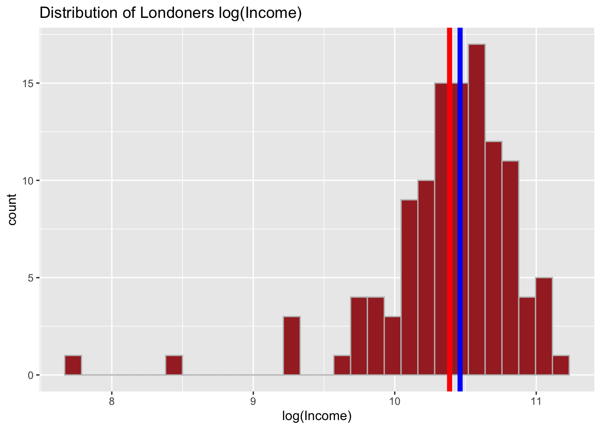
plot(model_anxlog2)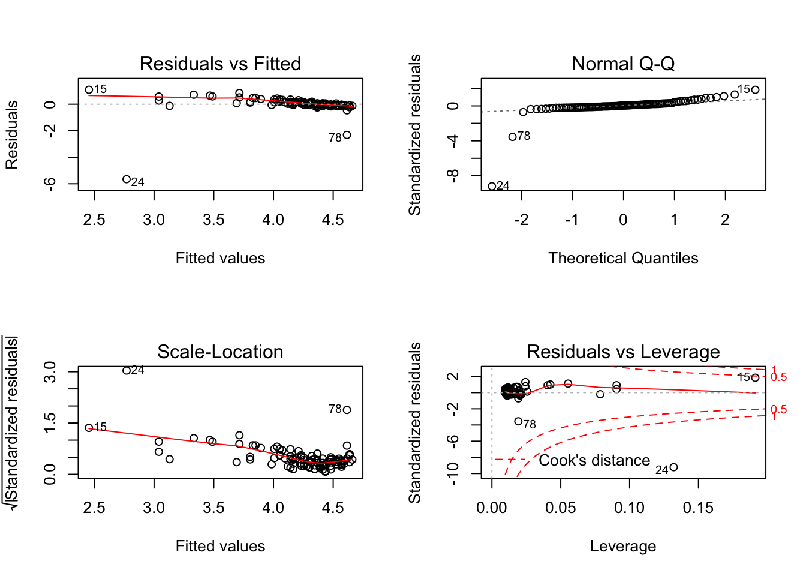
You could also use the scale function:
#Scale
anxiety$ScaleAnx <- scale(anxiety$Anxiety) #now have a mean of 0 and SD of 1
anxiety$ScaleRev <- scale(anxiety$Rev)
model_anxscale <- lm(anxiety$ScaleAnx ~ anxiety$ScaleRev)
par(mfrow=c(2,2))
plot(model_anxscale)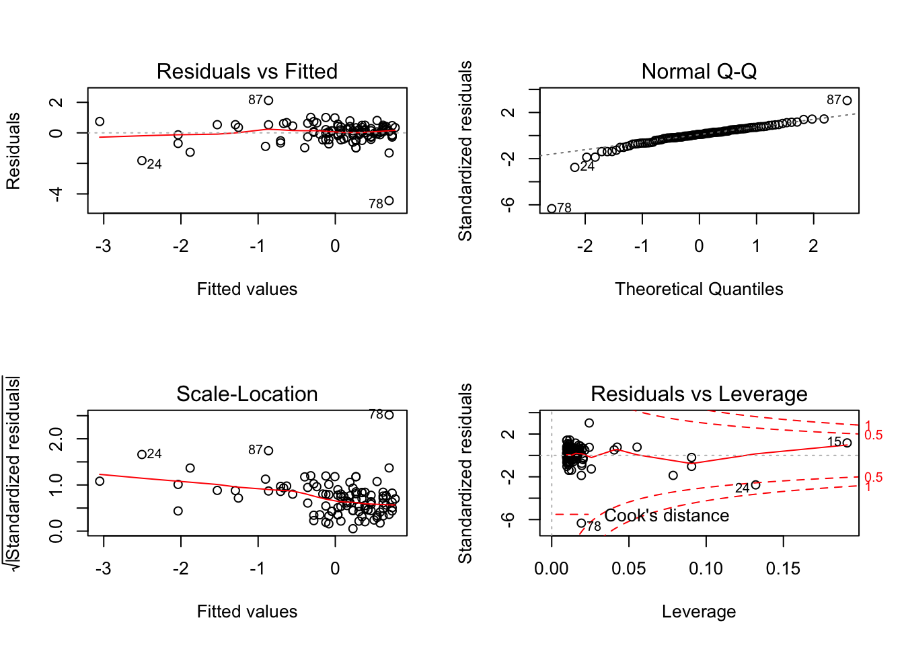
It could be the case that you are missing variables, or that you need to instead include a non-linear model. Sometimes the issue may be coming from model specification. We will present a brief example below.
17.5 Interaction (simple slope) and multiple explanatory factors
Lets try a different example, we now will try to incorporate both continuous and categorical variables as our independent variables. We will also consider the case where our categorical variable may moderate the effect of a continuous one.
Tomorrow we will extend this further to mixed effect models. But for now, lets load the data set that have some salary indicators and we will look at how department and year in service may affect the variation in salary.
#Load the data
salary <- read.csv('salary.csv')#Describe
summary(salary)## service salary dept
## Min. :2.608 Min. :22.05 Min. :0.00
## 1st Qu.:4.126 1st Qu.:30.08 1st Qu.:0.00
## Median :4.882 Median :37.79 Median :0.00
## Mean :4.869 Mean :39.78 Mean :0.48
## 3rd Qu.:5.651 3rd Qu.:49.61 3rd Qu.:1.00
## Max. :6.929 Max. :71.05 Max. :1.00We’ll also center our data around the mean here (because nobody has a service of 0 -meaning they all worked at least a month), and also make sure that ‘department’ is coded as factor. Centering will help you interpret the intercept, as it is meaningful within your data range.
# centre on mean
salary$service_m <- salary$service - mean(salary$service)
# dept as factor
salary$dept <- factor(salary$dept, labels = c("Store Manager", "Accounts"))Now, lets plot our data to try and get a better understanding of the relationship (if there is one!) between salary and both service and department.
# simple plot
ggplot(data=salary, aes(x=service, y=salary)) +
geom_point()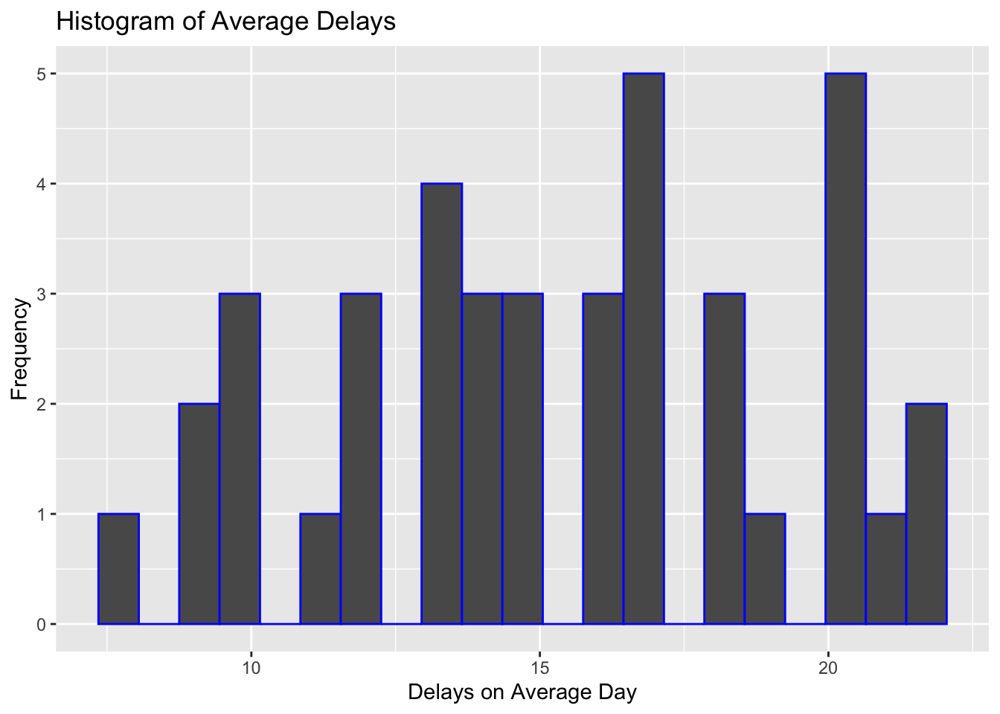
# with dimension of 'dept'
ggplot(data=salary, aes(x=service, y=salary,colour = dept)) +
geom_point()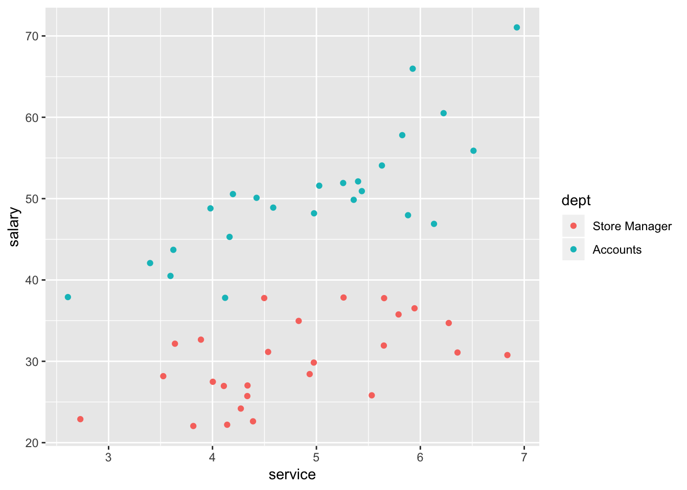
Lets run a very simple model:
#Simple model with not interaction
model_salary1 <- lm(salary ~ service_m + dept, data = salary)
summary(model_salary1)##
## Call:
## lm(formula = salary ~ service_m + dept, data = salary)
##
## Residuals:
## Min 1Q Median 3Q Max
## -8.9315 -2.2789 -0.5309 2.5806 12.0499
##
## Coefficients:
## Estimate Std. Error t value Pr(>|t|)
## (Intercept) 30.339 0.952 31.868 < 2e-16 ***
## service_m 4.368 0.667 6.549 3.95e-08 ***
## deptAccounts 19.665 1.377 14.280 < 2e-16 ***
## ---
## Signif. codes: 0 '***' 0.001 '**' 0.01 '*' 0.05 '.' 0.1 ' ' 1
##
## Residual standard error: 4.845 on 47 degrees of freedom
## Multiple R-squared: 0.8499, Adjusted R-squared: 0.8435
## F-statistic: 133 on 2 and 47 DF, p-value: < 2.2e-16The next step would be to test whether the relationship between service on salary was different in the accounts and manager departments. The presence of a significant interaction would indicate that the effect of one predictor variable on the response variable is different at different values of the other predictor variable. Lets test whether there is an interaction between service and department:
#Interaction
model_salary2 <- lm(salary ~ service_m*dept, data = salary)
summary(model_salary2)##
## Call:
## lm(formula = salary ~ service_m * dept, data = salary)
##
## Residuals:
## Min 1Q Median 3Q Max
## -10.3320 -2.7217 -0.2861 2.8132 9.9405
##
## Coefficients:
## Estimate Std. Error t value Pr(>|t|)
## (Intercept) 30.1911 0.9073 33.276 < 2e-16 ***
## service_m 2.7290 0.9227 2.958 0.00488 **
## deptAccounts 19.6694 1.3095 15.021 < 2e-16 ***
## service_m:deptAccounts 3.1071 1.2704 2.446 0.01834 *
## ---
## Signif. codes: 0 '***' 0.001 '**' 0.01 '*' 0.05 '.' 0.1 ' ' 1
##
## Residual standard error: 4.607 on 46 degrees of freedom
## Multiple R-squared: 0.8672, Adjusted R-squared: 0.8585
## F-statistic: 100.1 on 3 and 46 DF, p-value: < 2.2e-16Lets go through the coefficients:
- (Intercept): Under the manager condition, with a mean service, salary is 30.19.
- service_m: For every 1 year increase above the average length of service, salary will increase 2.73.
- deptAccounts: Under the accounts condition, and for an average length of service, salary increases 12.67 in comparison to the manager condition.
- service_m:deptAccounts: the effect of average length of service is higher by 3.11 under the accounts condition in comparison to the manager condition. In other words, the slope between average service and salary is 2.72+3.11 = 5.83 in the accounts condition.
We can note some slight improvements in explained variance, and that the interaction is significant, identifying the moderation effects. We can also plot this to see how it looks in terms of the slope affect. We can use the interactions package to do this, as it has a nice specified function to produce an interaction plot.
#Install and load 'interactions'
library(interactions)interact_plot(model_salary2, pred = service_m, modx = dept, plot.points = TRUE,
x.label = "Years Service", y.label = "Salary (£)",
legend.main = "Department")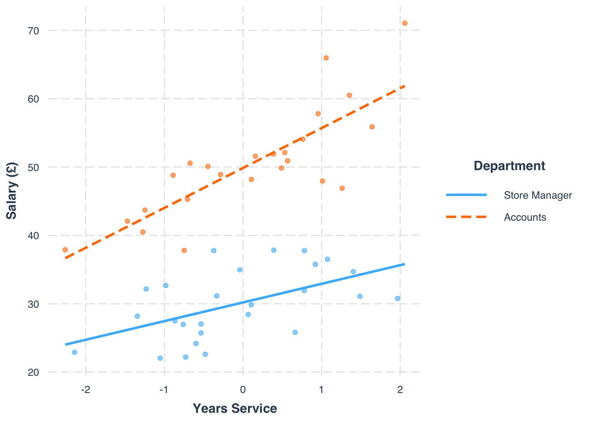